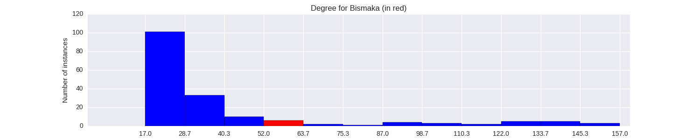

Quantiative Wayang Dictionary
Bismaka
Terms of address: Prabu
Type: Human
Origin: India
Notes on the Sanskrit version: King Bhishmaka ruled the kingdom of Vidarbha. He was was against the marriage of his daughter Rukmini to Lord Krishna.
Alternative names: Arya Prabu Rukma, Babru, Waskunti, Hirayana
Description in the Javanese version: He was a strong and smart warrior. He was killed in battle by Bomanarakasura, as narrated in the lakon Bromoasuruhan.
Found in the follwing lakon (stories):
Family relationships
Mother: Dayita
Father: Kuntiboja
Siblings: Basudewa, Kunti, Ugrasena
Consorts: Rumbini, KenSagopi
Offspring: Rukmara, Rukmana, Rarasati
More information
Ruler of: Kubina
Wanda: Yudasmara
Sources: Ensiklopedi Wayang Purwa, pp. 64-65
Network measurements for Bismaka
| Measurement | Value | |
|---|---|---|
| Degree | 60.0 |  |
| Weighted Degree | 117.0 |  |
| Closeness Centrality | 0.604166666667 |  |
| Betweeness Centrality | 84.8917839848 |  |
| Eigenvector Centrality | 0.45143662869 |  |
{kind=link}
Characters in the same adegan as Bismaka
| Character | Link weight |
|---|---|
| Character | Link weight |